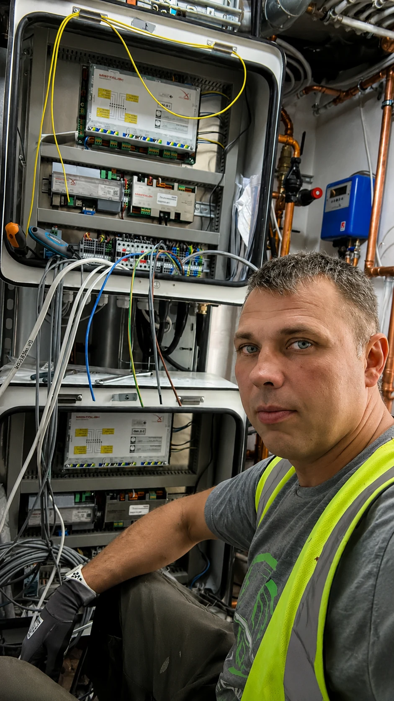
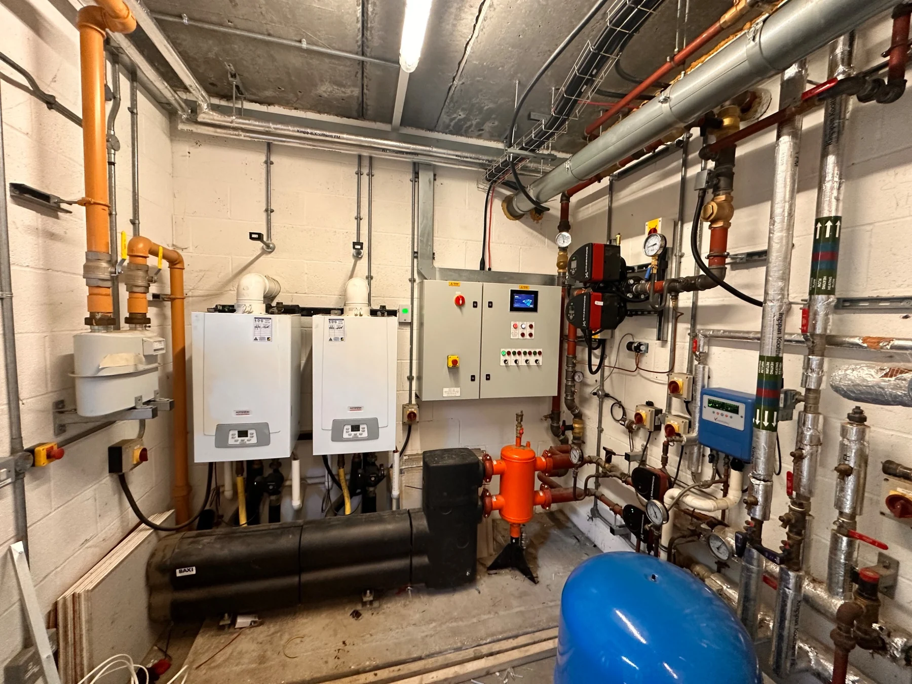
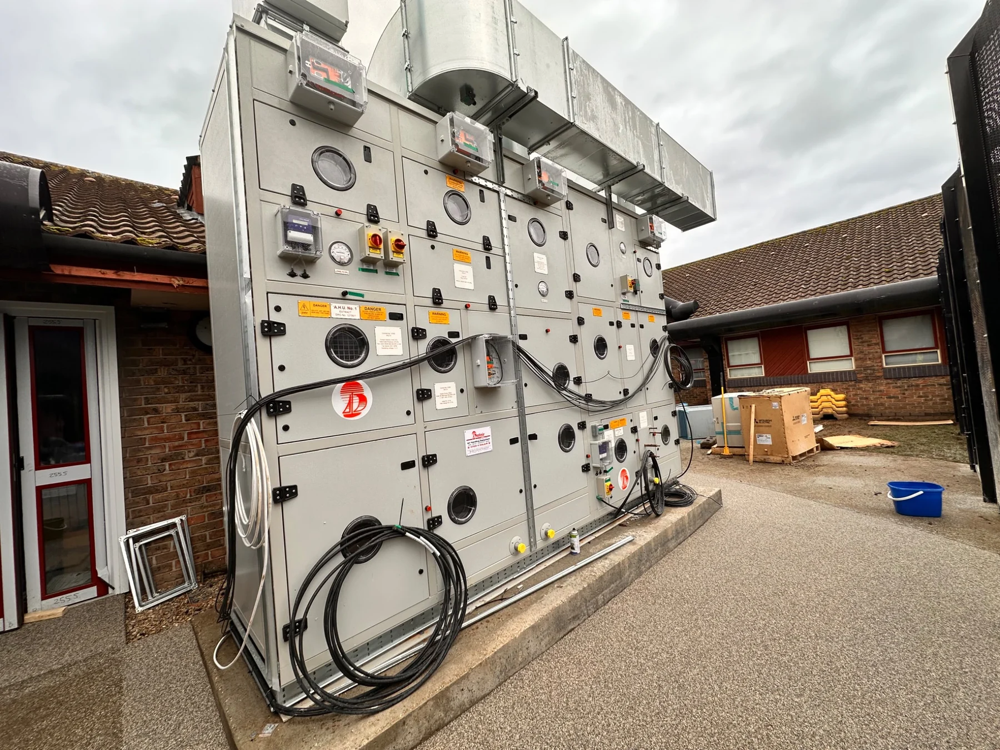
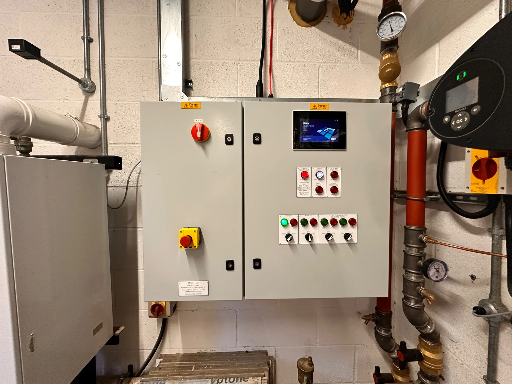
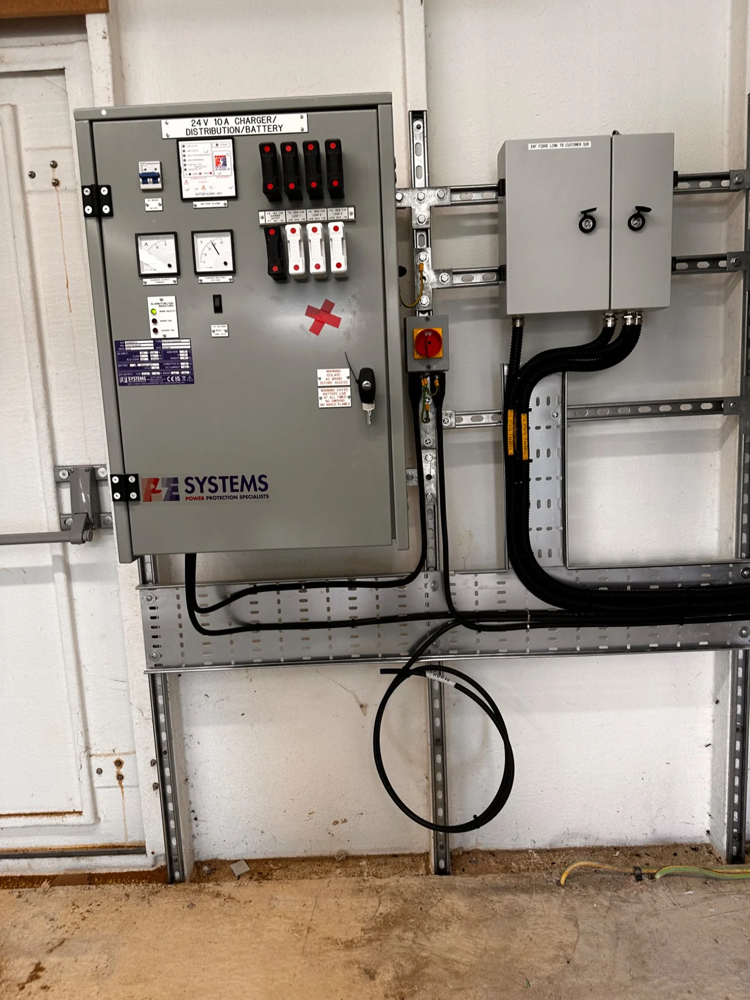
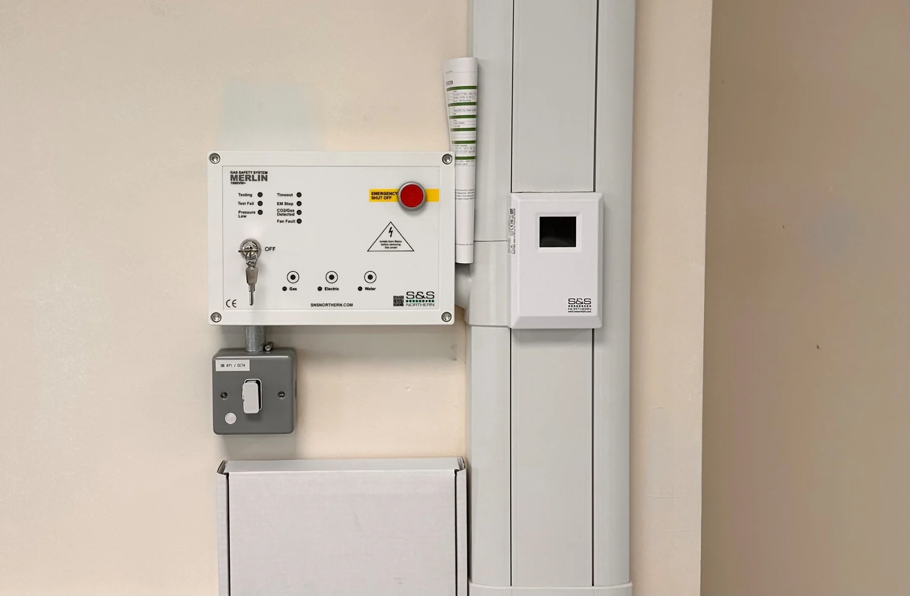
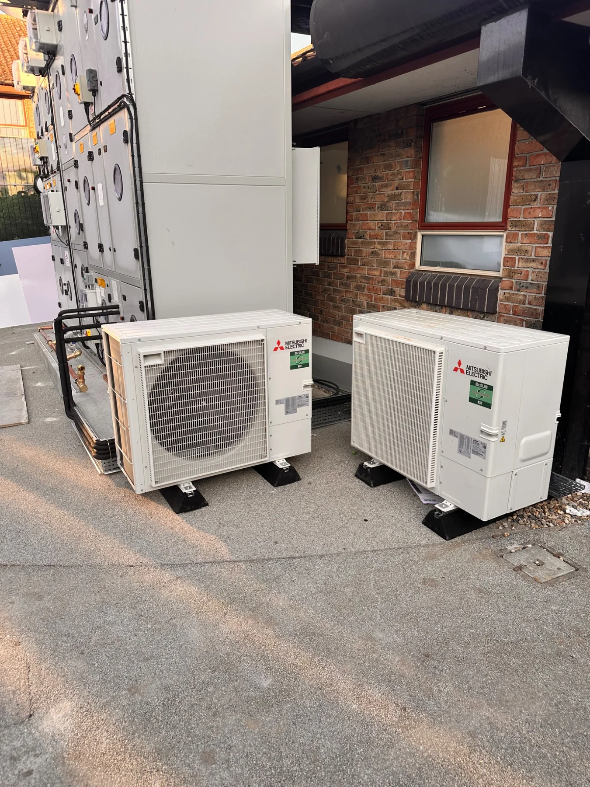

⚡
Elektros instaliacija
Kabelių trasos, kabelių tiesimas, įrangos ir valdymo spintų prijungimas.
PAGRINDINĖ KOMPETENCIJA
Profesinis portfolio
3 metų praktinė patirtis Jungtinėje Karalystėje, komerciniuose pastatuose ir pastatų valdymo sistemų projektuose.
Esu elektros instaliacijos ir BMS sistemų montuotojas, turintis praktinės patirties Jungtinėje Karalystėje. Dirbau su valdymo spintomis, AHU, MVHR, ASHP įranga, jutikliais, pavaromis bei BACnet ir Modbus ryšio linijomis.
Gebu skaityti elektros schemas, atlikti prijungimo darbus, tikrinti grandines ir ieškoti gedimų. Esu įpratęs dirbti pagal aukštus darbų saugos ir kokybės reikalavimus.
Aiškiai ir be išgalvotų procentų — tik realūs darbai, įranga ir technologijos.
Kabelių trasos, kabelių tiesimas, įrangos ir valdymo spintų prijungimas.
PAGRINDINĖ KOMPETENCIJAPastatų valdymo sistemų įrangos montavimas, prijungimas ir signalų tikrinimas.
Vėdinimo, rekuperacijos ir šilumos siurblių valdymo grandinės.
Komunikacijos kabelių tiesimas ir prijungimas pagal schemas.
Elektros ir valdymo schemų skaitymas bei darbo planavimas.
Grandinių tikrinimas, matavimai ir gedimų priežasčių paieška.
Kiekviena kategorija naudoja atskiras realių darbų nuotraukas. Paspaudus atsidaro pilno dydžio galerija.

Peržiūrėti galeriją ↗Šildymo ir vandens sistemų valdymas: valdymo spintos, siurbliai, jutikliai, vožtuvai, slėgio kontrolė ir lauko įrenginių kabeliavimas.

Peržiūrėti galeriją ↗Oro apdorojimo įrenginių, ventiliatorių, sklendžių, pavarų ir susijusių BMS lauko įrenginių montavimas bei prijungimas.

Peržiūrėti galeriją ↗Valdymo spintų prijungimas, terminalai, valdikliai, kabelių žymėjimas ir tvarkingas laidų išvedžiojimas pagal elektros schemas.

Peržiūrėti galeriją ↗Temperatūros ir slėgio jutikliai, pavaros, valdikliai, ryšio kabeliai bei įvairių lauko įrenginių prijungimas.

Peržiūrėti galeriją ↗Valdymo įrangos, izoliatorių, kabelių kanalų ir susijusių elektros komponentų montavimas komerciniuose objektuose.

Peržiūrėti nuotrauką ↗Lauko įrangos elektros maitinimo, izoliavimo ir valdymo sprendimai, įrengiant sistemas pagal projekto reikalavimus.
Peržiūriu schemas, įrangos paskirtį, kabelių maršrutus ir valdymo logiką.
Tiesiu kabelius, prijungiu spintas, jutiklius, pavaras ir HVAC įrangą.
Tikrinu grandines, signalus ir padedu nustatyti bei pašalinti gedimus.
Palieku tvarkingą, aiškiai pažymėtą ir eksploatacijai paruoštą sistemą.
Tarptautinė darbo aplinka, komandinis darbas, atsakomybė ir darbų saugos kultūra.
Paspaudus kortelę atsidaro originalus, tvarkingai apkarpytas dokumentas.
Domina elektros instaliacijos, BMS montuotojo ir techninės priežiūros pozicijos.